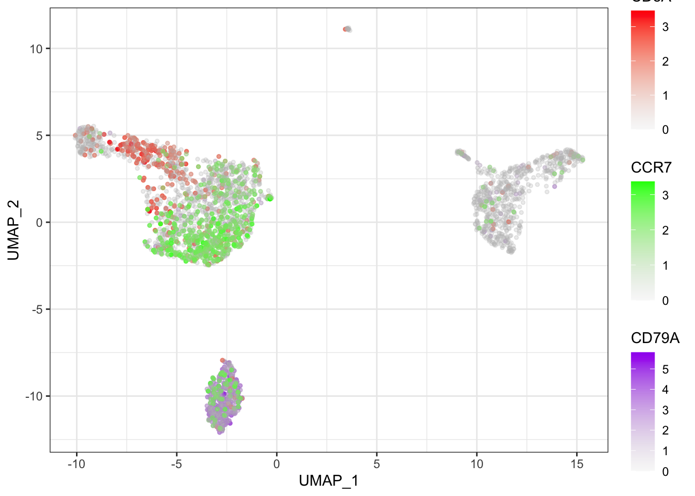
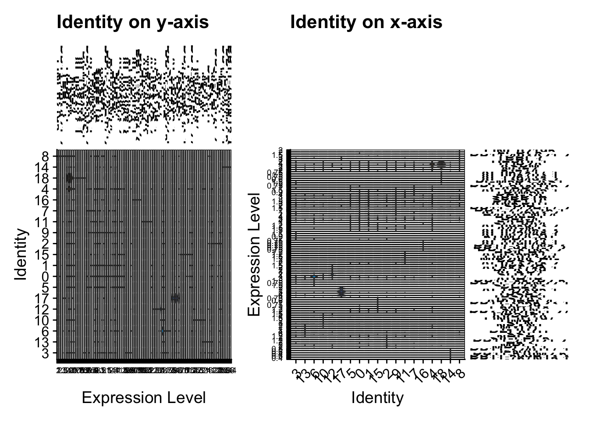

Packages
UMAP
Load Seurat object
### Load data
load(here("learn", "2023_scRNA_Seurat", "pbmc_tutorial_singleR.RData"))
load(here("learn", "2023_scRNA_Seurat", "sce.anno.RData"))
load(here("learn", "2023_scRNA_Seurat", "all_markers.RData"))
top5 <- all_markers |> group_by(cluster) |> top_n(5, avg_log2FC)
### Check data
head(pbmc, 2)
## orig.ident nCount_RNA nFeature_RNA percent.mt percent.HB
## AAACATACAACCAC-1 pbmc3k 2419 779 3.017776 0
## AAACATTGAGCTAC-1 pbmc3k 4903 1352 3.793596 0
## RNA_snn_res.0.5 seurat_clusters labels
## AAACATACAACCAC-1 0 0 T_cells
## AAACATTGAGCTAC-1 3 3 B_cell
head(sce2, 2)
## orig.ident nCount_RNA nFeature_RNA percent.mt
## K16733_AAACATACTCGTTT-1 K16733 2464 965 12.662338
## K16733_AAAGCAGAACGTTG-1 K16733 7145 1919 2.449265
## percent.rp percent.HB RNA_snn_res.0.5 seurat_clusters
## K16733_AAACATACTCGTTT-1 13.35227 0 11 11
## K16733_AAAGCAGAACGTTG-1 36.72498 0 3 3
## sampel sample group globalC anno
## K16733_AAACATACTCGTTT-1 P01 P01 PT Epi Epi
## K16733_AAAGCAGAACGTTG-1 P01 P01 PT Fibroblast Fibroblast
head(top5)
## # A tibble: 6 × 7
## # Groups: cluster [2]
## p_val avg_log2FC pct.1 pct.2 p_val_adj cluster gene
## <dbl> <dbl> <dbl> <dbl> <dbl> <fct> <chr>
## 1 2.43e- 67 3.05 0.172 0.079 1.26e- 62 0 REG4
## 2 3.38e- 51 3.19 0.069 0.019 1.76e- 46 0 BPIFB1
## 3 5.32e- 30 3.71 0.031 0.007 2.76e- 25 0 FABP1
## 4 6.37e- 21 2.79 0.018 0.003 3.31e- 16 0 SLC9A4
## 5 1.65e- 20 2.70 0.017 0.003 8.56e- 16 0 AC073218.2
## 6 2.51e-112 3.57 0.132 0.023 1.30e-107 1 SPRR1ADefault seurat UMAP
# View the UMAP
DimPlot(pbmc, group.by = c("seurat_clusters", "labels"), reduction = "umap")
UMAP with ggplot2
# Find the UMAP data
str(pbmc)
## Formal class 'Seurat' [package "SeuratObject"] with 13 slots
## ..@ assays :List of 1
## .. ..$ RNA:Formal class 'Assay' [package "SeuratObject"] with 8 slots
## .. .. .. ..@ counts :Formal class 'dgCMatrix' [package "Matrix"] with 6 slots
## .. .. .. .. .. ..@ i : int [1:2238732] 29 73 80 148 163 184 186 227 229 230 ...
## .. .. .. .. .. ..@ p : int [1:2639] 0 779 2131 3260 4220 4741 5522 6304 7094 7626 ...
## .. .. .. .. .. ..@ Dim : int [1:2] 13714 2638
## .. .. .. .. .. ..@ Dimnames:List of 2
## .. .. .. .. .. .. ..$ : chr [1:13714] "AL627309.1" "AP006222.2" "RP11-206L10.2" "RP11-206L10.9" ...
## .. .. .. .. .. .. ..$ : chr [1:2638] "AAACATACAACCAC-1" "AAACATTGAGCTAC-1" "AAACATTGATCAGC-1" "AAACCGTGCTTCCG-1" ...
## .. .. .. .. .. ..@ x : num [1:2238732] 1 1 2 1 1 1 1 41 1 1 ...
## .. .. .. .. .. ..@ factors : list()
## .. .. .. ..@ data :Formal class 'dgCMatrix' [package "Matrix"] with 6 slots
## .. .. .. .. .. ..@ i : int [1:2238732] 29 73 80 148 163 184 186 227 229 230 ...
## .. .. .. .. .. ..@ p : int [1:2639] 0 779 2131 3260 4220 4741 5522 6304 7094 7626 ...
## .. .. .. .. .. ..@ Dim : int [1:2] 13714 2638
## .. .. .. .. .. ..@ Dimnames:List of 2
## .. .. .. .. .. .. ..$ : chr [1:13714] "AL627309.1" "AP006222.2" "RP11-206L10.2" "RP11-206L10.9" ...
## .. .. .. .. .. .. ..$ : chr [1:2638] "AAACATACAACCAC-1" "AAACATTGAGCTAC-1" "AAACATTGATCAGC-1" "AAACCGTGCTTCCG-1" ...
## .. .. .. .. .. ..@ x : num [1:2238732] 1.64 1.64 2.23 1.64 1.64 ...
## .. .. .. .. .. ..@ factors : list()
## .. .. .. ..@ scale.data : num [1:2000, 1:2638] -0.8556 -0.2773 1.4947 -0.0463 -0.4658 ...
## .. .. .. .. ..- attr(*, "dimnames")=List of 2
## .. .. .. .. .. ..$ : chr [1:2000] "ISG15" "CPSF3L" "MRPL20" "ATAD3C" ...
## .. .. .. .. .. ..$ : chr [1:2638] "AAACATACAACCAC-1" "AAACATTGAGCTAC-1" "AAACATTGATCAGC-1" "AAACCGTGCTTCCG-1" ...
## .. .. .. ..@ assay.orig : NULL
## .. .. .. ..@ var.features : chr [1:2000] "PPBP" "LYZ" "S100A9" "IGLL5" ...
## .. .. .. ..@ meta.features:'data.frame': 13714 obs. of 5 variables:
## .. .. .. .. ..$ vst.mean : num [1:13714] 0.00341 0.00114 0.0019 0.00114 0.00682 ...
## .. .. .. .. ..$ vst.variance : num [1:13714] 0.0034 0.00114 0.00189 0.00114 0.00678 ...
## .. .. .. .. ..$ vst.variance.expected : num [1:13714] 0.00365 0.00114 0.00197 0.00114 0.00748 ...
## .. .. .. .. ..$ vst.variance.standardized: num [1:13714] 0.933 0.992 0.963 0.992 0.906 ...
## .. .. .. .. ..$ vst.variable : logi [1:13714] FALSE FALSE FALSE FALSE FALSE FALSE ...
## .. .. .. ..@ misc : list()
## .. .. .. ..@ key : chr "rna_"
## ..@ meta.data :'data.frame': 2638 obs. of 8 variables:
## .. ..$ orig.ident : Factor w/ 1 level "pbmc3k": 1 1 1 1 1 1 1 1 1 1 ...
## .. ..$ nCount_RNA : num [1:2638] 2419 4903 3147 2639 980 ...
## .. ..$ nFeature_RNA : int [1:2638] 779 1352 1129 960 521 781 782 790 532 550 ...
## .. ..$ percent.mt : num [1:2638] 3.02 3.79 0.89 1.74 1.22 ...
## .. ..$ percent.HB : num [1:2638] 0 0 0 0 0 0 0 0 0 0 ...
## .. ..$ RNA_snn_res.0.5: Factor w/ 9 levels "0","1","2","3",..: 1 4 3 2 7 3 5 5 5 6 ...
## .. ..$ seurat_clusters: Factor w/ 9 levels "0","1","2","3",..: 1 4 3 2 7 3 5 5 5 6 ...
## .. ..$ labels : chr [1:2638] "T_cells" "B_cell" "T_cells" "Monocyte" ...
## ..@ active.assay: chr "RNA"
## ..@ active.ident: Factor w/ 9 levels "0","1","2","3",..: 1 4 3 2 7 3 5 5 5 6 ...
## .. ..- attr(*, "names")= chr [1:2638] "AAACATACAACCAC-1" "AAACATTGAGCTAC-1" "AAACATTGATCAGC-1" "AAACCGTGCTTCCG-1" ...
## ..@ graphs :List of 2
## .. ..$ RNA_nn :Formal class 'Graph' [package "SeuratObject"] with 7 slots
## .. .. .. ..@ assay.used: chr "RNA"
## .. .. .. ..@ i : int [1:52760] 0 6 102 203 213 229 292 451 547 618 ...
## .. .. .. ..@ p : int [1:2639] 0 33 50 64 80 87 103 139 155 162 ...
## .. .. .. ..@ Dim : int [1:2] 2638 2638
## .. .. .. ..@ Dimnames :List of 2
## .. .. .. .. ..$ : chr [1:2638] "AAACATACAACCAC-1" "AAACATTGAGCTAC-1" "AAACATTGATCAGC-1" "AAACCGTGCTTCCG-1" ...
## .. .. .. .. ..$ : chr [1:2638] "AAACATACAACCAC-1" "AAACATTGAGCTAC-1" "AAACATTGATCAGC-1" "AAACCGTGCTTCCG-1" ...
## .. .. .. ..@ x : num [1:52760] 1 1 1 1 1 1 1 1 1 1 ...
## .. .. .. ..@ factors : list()
## .. ..$ RNA_snn:Formal class 'Graph' [package "SeuratObject"] with 7 slots
## .. .. .. ..@ assay.used: chr "RNA"
## .. .. .. ..@ i : int [1:194424] 0 6 102 136 187 203 229 292 421 446 ...
## .. .. .. ..@ p : int [1:2639] 0 62 120 170 240 287 379 453 533 573 ...
## .. .. .. ..@ Dim : int [1:2] 2638 2638
## .. .. .. ..@ Dimnames :List of 2
## .. .. .. .. ..$ : chr [1:2638] "AAACATACAACCAC-1" "AAACATTGAGCTAC-1" "AAACATTGATCAGC-1" "AAACCGTGCTTCCG-1" ...
## .. .. .. .. ..$ : chr [1:2638] "AAACATACAACCAC-1" "AAACATTGAGCTAC-1" "AAACATTGATCAGC-1" "AAACCGTGCTTCCG-1" ...
## .. .. .. ..@ x : num [1:194424] 1 0.1111 0.1765 0.0811 0.0811 ...
## .. .. .. ..@ factors : list()
## ..@ neighbors : list()
## ..@ reductions :List of 3
## .. ..$ pca :Formal class 'DimReduc' [package "SeuratObject"] with 9 slots
## .. .. .. ..@ cell.embeddings : num [1:2638, 1:50] -5.84 -2.56 -1.64 13.29 -2.15 ...
## .. .. .. .. ..- attr(*, "dimnames")=List of 2
## .. .. .. .. .. ..$ : chr [1:2638] "AAACATACAACCAC-1" "AAACATTGAGCTAC-1" "AAACATTGATCAGC-1" "AAACCGTGCTTCCG-1" ...
## .. .. .. .. .. ..$ : chr [1:50] "PC_1" "PC_2" "PC_3" "PC_4" ...
## .. .. .. ..@ feature.loadings : num [1:2000, 1:50] 0.01091 0.11663 0.11569 -0.00853 -0.01632 ...
## .. .. .. .. ..- attr(*, "dimnames")=List of 2
## .. .. .. .. .. ..$ : chr [1:2000] "PPBP" "LYZ" "S100A9" "IGLL5" ...
## .. .. .. .. .. ..$ : chr [1:50] "PC_1" "PC_2" "PC_3" "PC_4" ...
## .. .. .. ..@ feature.loadings.projected: num[0 , 0 ]
## .. .. .. ..@ assay.used : chr "RNA"
## .. .. .. ..@ global : logi FALSE
## .. .. .. ..@ stdev : num [1:50] 7.05 4.5 3.87 3.75 3.15 ...
## .. .. .. ..@ jackstraw :Formal class 'JackStrawData' [package "SeuratObject"] with 4 slots
## .. .. .. .. .. ..@ empirical.p.values : num [1:2000, 1:20] 0.0005 0 0 0.0035 0 0 0.01 0 0.0135 0 ...
## .. .. .. .. .. .. ..- attr(*, "dimnames")=List of 2
## .. .. .. .. .. .. .. ..$ : chr [1:2000] "PPBP" "LYZ" "S100A9" "IGLL5" ...
## .. .. .. .. .. .. .. ..$ : chr [1:20] "PC1" "PC2" "PC3" "PC4" ...
## .. .. .. .. .. ..@ fake.reduction.scores : num [1:2000, 1:20] -0.003524 0.000285 -0.000627 0.002054 0.000959 ...
## .. .. .. .. .. ..@ empirical.p.values.full: logi [1, 1] NA
## .. .. .. .. .. ..@ overall.p.values : num [1:20, 1:2] 1 2 3 4 5 6 7 8 9 10 ...
## .. .. .. .. .. .. ..- attr(*, "dimnames")=List of 2
## .. .. .. .. .. .. .. ..$ : NULL
## .. .. .. .. .. .. .. ..$ : chr [1:2] "PC" "Score"
## .. .. .. ..@ misc :List of 1
## .. .. .. .. ..$ total.variance: num 1734
## .. .. .. ..@ key : chr "PC_"
## .. ..$ umap:Formal class 'DimReduc' [package "SeuratObject"] with 9 slots
## .. .. .. ..@ cell.embeddings : num [1:2638, 1:2] -4.58 -2.81 -1.68 12.69 -9.83 ...
## .. .. .. .. ..- attr(*, "scaled:center")= num [1:2] -0.0395 -1.1523
## .. .. .. .. ..- attr(*, "dimnames")=List of 2
## .. .. .. .. .. ..$ : chr [1:2638] "AAACATACAACCAC-1" "AAACATTGAGCTAC-1" "AAACATTGATCAGC-1" "AAACCGTGCTTCCG-1" ...
## .. .. .. .. .. ..$ : chr [1:2] "UMAP_1" "UMAP_2"
## .. .. .. ..@ feature.loadings : num[0 , 0 ]
## .. .. .. ..@ feature.loadings.projected: num[0 , 0 ]
## .. .. .. ..@ assay.used : chr "RNA"
## .. .. .. ..@ global : logi TRUE
## .. .. .. ..@ stdev : num(0)
## .. .. .. ..@ jackstraw :Formal class 'JackStrawData' [package "SeuratObject"] with 4 slots
## .. .. .. .. .. ..@ empirical.p.values : num[0 , 0 ]
## .. .. .. .. .. ..@ fake.reduction.scores : num[0 , 0 ]
## .. .. .. .. .. ..@ empirical.p.values.full: num[0 , 0 ]
## .. .. .. .. .. ..@ overall.p.values : num[0 , 0 ]
## .. .. .. ..@ misc : list()
## .. .. .. ..@ key : chr "UMAP_"
## .. ..$ tsne:Formal class 'DimReduc' [package "SeuratObject"] with 9 slots
## .. .. .. ..@ cell.embeddings : num [1:2638, 1:2] -11.1 -36.27 1.96 37.46 -20.88 ...
## .. .. .. .. ..- attr(*, "dimnames")=List of 2
## .. .. .. .. .. ..$ : chr [1:2638] "AAACATACAACCAC-1" "AAACATTGAGCTAC-1" "AAACATTGATCAGC-1" "AAACCGTGCTTCCG-1" ...
## .. .. .. .. .. ..$ : chr [1:2] "tSNE_1" "tSNE_2"
## .. .. .. ..@ feature.loadings : num[0 , 0 ]
## .. .. .. ..@ feature.loadings.projected: num[0 , 0 ]
## .. .. .. ..@ assay.used : chr "RNA"
## .. .. .. ..@ global : logi TRUE
## .. .. .. ..@ stdev : num(0)
## .. .. .. ..@ jackstraw :Formal class 'JackStrawData' [package "SeuratObject"] with 4 slots
## .. .. .. .. .. ..@ empirical.p.values : num[0 , 0 ]
## .. .. .. .. .. ..@ fake.reduction.scores : num[0 , 0 ]
## .. .. .. .. .. ..@ empirical.p.values.full: num[0 , 0 ]
## .. .. .. .. .. ..@ overall.p.values : num[0 , 0 ]
## .. .. .. ..@ misc : list()
## .. .. .. ..@ key : chr "tSNE_"
## ..@ images : list()
## ..@ project.name: chr "pbmc3k"
## ..@ misc : list()
## ..@ version :Classes 'package_version', 'numeric_version' hidden list of 1
## .. ..$ : int [1:3] 4 0 0
## ..@ commands :List of 10
## .. ..$ NormalizeData.RNA :Formal class 'SeuratCommand' [package "SeuratObject"] with 5 slots
## .. .. .. ..@ name : chr "NormalizeData.RNA"
## .. .. .. ..@ time.stamp : POSIXct[1:1], format: "2021-07-08 11:49:17"
## .. .. .. ..@ assay.used : chr "RNA"
## .. .. .. ..@ call.string: chr [1:2] "NormalizeData(pbmc, normalization.method = \"LogNormalize\", " " scale.factor = 10000)"
## .. .. .. ..@ params :List of 5
## .. .. .. .. ..$ assay : chr "RNA"
## .. .. .. .. ..$ normalization.method: chr "LogNormalize"
## .. .. .. .. ..$ scale.factor : num 10000
## .. .. .. .. ..$ margin : num 1
## .. .. .. .. ..$ verbose : logi TRUE
## .. ..$ FindVariableFeatures.RNA:Formal class 'SeuratCommand' [package "SeuratObject"] with 5 slots
## .. .. .. ..@ name : chr "FindVariableFeatures.RNA"
## .. .. .. ..@ time.stamp : POSIXct[1:1], format: "2021-07-08 11:49:18"
## .. .. .. ..@ assay.used : chr "RNA"
## .. .. .. ..@ call.string: chr "FindVariableFeatures(pbmc, selection.method = \"vst\", nfeatures = 2000)"
## .. .. .. ..@ params :List of 12
## .. .. .. .. ..$ assay : chr "RNA"
## .. .. .. .. ..$ selection.method : chr "vst"
## .. .. .. .. ..$ loess.span : num 0.3
## .. .. .. .. ..$ clip.max : chr "auto"
## .. .. .. .. ..$ mean.function :function (mat, display_progress)
## .. .. .. .. ..$ dispersion.function:function (mat, display_progress)
## .. .. .. .. ..$ num.bin : num 20
## .. .. .. .. ..$ binning.method : chr "equal_width"
## .. .. .. .. ..$ nfeatures : num 2000
## .. .. .. .. ..$ mean.cutoff : num [1:2] 0.1 8
## .. .. .. .. ..$ dispersion.cutoff : num [1:2] 1 Inf
## .. .. .. .. ..$ verbose : logi TRUE
## .. ..$ ScaleData.RNA :Formal class 'SeuratCommand' [package "SeuratObject"] with 5 slots
## .. .. .. ..@ name : chr "ScaleData.RNA"
## .. .. .. ..@ time.stamp : POSIXct[1:1], format: "2021-07-08 11:49:47"
## .. .. .. ..@ assay.used : chr "RNA"
## .. .. .. ..@ call.string: chr "ScaleData(pbmc, vars.to.regress = \"percent.mt\")"
## .. .. .. ..@ params :List of 11
## .. .. .. .. ..$ features : chr [1:2000] "PPBP" "LYZ" "S100A9" "IGLL5" ...
## .. .. .. .. ..$ assay : chr "RNA"
## .. .. .. .. ..$ vars.to.regress : chr "percent.mt"
## .. .. .. .. ..$ model.use : chr "linear"
## .. .. .. .. ..$ use.umi : logi FALSE
## .. .. .. .. ..$ do.scale : logi TRUE
## .. .. .. .. ..$ do.center : logi TRUE
## .. .. .. .. ..$ scale.max : num 10
## .. .. .. .. ..$ block.size : num 1000
## .. .. .. .. ..$ min.cells.to.block: num 2638
## .. .. .. .. ..$ verbose : logi TRUE
## .. ..$ RunPCA.RNA :Formal class 'SeuratCommand' [package "SeuratObject"] with 5 slots
## .. .. .. ..@ name : chr "RunPCA.RNA"
## .. .. .. ..@ time.stamp : POSIXct[1:1], format: "2021-07-08 11:49:54"
## .. .. .. ..@ assay.used : chr "RNA"
## .. .. .. ..@ call.string: chr "RunPCA(pbmc, features = VariableFeatures(object = pbmc))"
## .. .. .. ..@ params :List of 11
## .. .. .. .. ..$ assay : chr "RNA"
## .. .. .. .. ..$ features : chr [1:2000] "PPBP" "LYZ" "S100A9" "IGLL5" ...
## .. .. .. .. ..$ npcs : num 50
## .. .. .. .. ..$ rev.pca : logi FALSE
## .. .. .. .. ..$ weight.by.var : logi TRUE
## .. .. .. .. ..$ verbose : logi TRUE
## .. .. .. .. ..$ ndims.print : int [1:5] 1 2 3 4 5
## .. .. .. .. ..$ nfeatures.print: num 30
## .. .. .. .. ..$ reduction.name : chr "pca"
## .. .. .. .. ..$ reduction.key : chr "PC_"
## .. .. .. .. ..$ seed.use : num 42
## .. ..$ JackStraw.RNA.pca :Formal class 'SeuratCommand' [package "SeuratObject"] with 5 slots
## .. .. .. ..@ name : chr "JackStraw.RNA.pca"
## .. .. .. ..@ time.stamp : POSIXct[1:1], format: "2021-07-08 11:54:13"
## .. .. .. ..@ assay.used : chr "RNA"
## .. .. .. ..@ call.string: chr "JackStraw(pbmc, num.replicate = 100)"
## .. .. .. ..@ params :List of 7
## .. .. .. .. ..$ reduction : chr "pca"
## .. .. .. .. ..$ assay : chr "RNA"
## .. .. .. .. ..$ dims : num 20
## .. .. .. .. ..$ num.replicate: num 100
## .. .. .. .. ..$ prop.freq : num 0.01
## .. .. .. .. ..$ verbose : logi TRUE
## .. .. .. .. ..$ maxit : num 1000
## .. ..$ ScoreJackStraw :Formal class 'SeuratCommand' [package "SeuratObject"] with 5 slots
## .. .. .. ..@ name : chr "ScoreJackStraw"
## .. .. .. ..@ time.stamp : POSIXct[1:1], format: "2021-07-08 11:54:13"
## .. .. .. ..@ assay.used : chr "RNA"
## .. .. .. ..@ call.string: chr "ScoreJackStraw(pbmc, dims = 1:20)"
## .. .. .. ..@ params :List of 4
## .. .. .. .. ..$ reduction : chr "pca"
## .. .. .. .. ..$ dims : int [1:20] 1 2 3 4 5 6 7 8 9 10 ...
## .. .. .. .. ..$ score.thresh: num 1e-05
## .. .. .. .. ..$ do.plot : logi FALSE
## .. ..$ FindNeighbors.RNA.pca :Formal class 'SeuratCommand' [package "SeuratObject"] with 5 slots
## .. .. .. ..@ name : chr "FindNeighbors.RNA.pca"
## .. .. .. ..@ time.stamp : POSIXct[1:1], format: "2021-07-08 11:54:15"
## .. .. .. ..@ assay.used : chr "RNA"
## .. .. .. ..@ call.string: chr "FindNeighbors(pbmc, dims = 1:10)"
## .. .. .. ..@ params :List of 17
## .. .. .. .. ..$ reduction : chr "pca"
## .. .. .. .. ..$ dims : int [1:10] 1 2 3 4 5 6 7 8 9 10
## .. .. .. .. ..$ assay : chr "RNA"
## .. .. .. .. ..$ k.param : num 20
## .. .. .. .. ..$ return.neighbor: logi FALSE
## .. .. .. .. ..$ compute.SNN : logi TRUE
## .. .. .. .. ..$ prune.SNN : num 0.0667
## .. .. .. .. ..$ nn.method : chr "annoy"
## .. .. .. .. ..$ n.trees : num 50
## .. .. .. .. ..$ annoy.metric : chr "euclidean"
## .. .. .. .. ..$ nn.eps : num 0
## .. .. .. .. ..$ verbose : logi TRUE
## .. .. .. .. ..$ force.recalc : logi FALSE
## .. .. .. .. ..$ do.plot : logi FALSE
## .. .. .. .. ..$ graph.name : chr [1:2] "RNA_nn" "RNA_snn"
## .. .. .. .. ..$ l2.norm : logi FALSE
## .. .. .. .. ..$ cache.index : logi FALSE
## .. ..$ FindClusters :Formal class 'SeuratCommand' [package "SeuratObject"] with 5 slots
## .. .. .. ..@ name : chr "FindClusters"
## .. .. .. ..@ time.stamp : POSIXct[1:1], format: "2021-07-08 11:54:15"
## .. .. .. ..@ assay.used : chr "RNA"
## .. .. .. ..@ call.string: chr "FindClusters(pbmc, resolution = 0.5)"
## .. .. .. ..@ params :List of 10
## .. .. .. .. ..$ graph.name : chr "RNA_snn"
## .. .. .. .. ..$ modularity.fxn : num 1
## .. .. .. .. ..$ resolution : num 0.5
## .. .. .. .. ..$ method : chr "matrix"
## .. .. .. .. ..$ algorithm : num 1
## .. .. .. .. ..$ n.start : num 10
## .. .. .. .. ..$ n.iter : num 10
## .. .. .. .. ..$ random.seed : num 0
## .. .. .. .. ..$ group.singletons: logi TRUE
## .. .. .. .. ..$ verbose : logi TRUE
## .. ..$ RunUMAP.RNA.pca :Formal class 'SeuratCommand' [package "SeuratObject"] with 5 slots
## .. .. .. ..@ name : chr "RunUMAP.RNA.pca"
## .. .. .. ..@ time.stamp : POSIXct[1:1], format: "2021-07-08 11:54:28"
## .. .. .. ..@ assay.used : chr "RNA"
## .. .. .. ..@ call.string: chr "RunUMAP(pbmc, dims = 1:10)"
## .. .. .. ..@ params :List of 22
## .. .. .. .. ..$ dims : int [1:10] 1 2 3 4 5 6 7 8 9 10
## .. .. .. .. ..$ reduction : chr "pca"
## .. .. .. .. ..$ assay : chr "RNA"
## .. .. .. .. ..$ slot : chr "data"
## .. .. .. .. ..$ umap.method : chr "uwot"
## .. .. .. .. ..$ return.model : logi FALSE
## .. .. .. .. ..$ n.neighbors : int 30
## .. .. .. .. ..$ n.components : int 2
## .. .. .. .. ..$ metric : chr "cosine"
## .. .. .. .. ..$ learning.rate : num 1
## .. .. .. .. ..$ min.dist : num 0.3
## .. .. .. .. ..$ spread : num 1
## .. .. .. .. ..$ set.op.mix.ratio : num 1
## .. .. .. .. ..$ local.connectivity : int 1
## .. .. .. .. ..$ repulsion.strength : num 1
## .. .. .. .. ..$ negative.sample.rate: int 5
## .. .. .. .. ..$ uwot.sgd : logi FALSE
## .. .. .. .. ..$ seed.use : int 42
## .. .. .. .. ..$ angular.rp.forest : logi FALSE
## .. .. .. .. ..$ verbose : logi TRUE
## .. .. .. .. ..$ reduction.name : chr "umap"
## .. .. .. .. ..$ reduction.key : chr "UMAP_"
## .. ..$ RunTSNE :Formal class 'SeuratCommand' [package "SeuratObject"] with 5 slots
## .. .. .. ..@ name : chr "RunTSNE"
## .. .. .. ..@ time.stamp : POSIXct[1:1], format: "2021-07-08 11:54:36"
## .. .. .. ..@ assay.used : chr "RNA"
## .. .. .. ..@ call.string: chr "RunTSNE(pbmc, dims = 1:10)"
## .. .. .. ..@ params :List of 8
## .. .. .. .. ..$ reduction : chr "pca"
## .. .. .. .. ..$ cells : chr [1:2638] "AAACATACAACCAC-1" "AAACATTGAGCTAC-1" "AAACATTGATCAGC-1" "AAACCGTGCTTCCG-1" ...
## .. .. .. .. ..$ dims : int [1:10] 1 2 3 4 5 6 7 8 9 10
## .. .. .. .. ..$ seed.use : num 1
## .. .. .. .. ..$ tsne.method : chr "Rtsne"
## .. .. .. .. ..$ dim.embed : num 2
## .. .. .. .. ..$ reduction.name: chr "tsne"
## .. .. .. .. ..$ reduction.key : chr "tSNE_"
## ..@ tools :List of 2
## .. ..$ BuildClusterTree :List of 4
## .. .. ..$ edge : int [1:16, 1:2] 10 10 11 12 12 11 13 14 14 16 ...
## .. .. ..$ edge.length: num [1:16] 463 158 174 131 131 ...
## .. .. ..$ tip.label : chr [1:9] "0" "1" "2" "3" ...
## .. .. ..$ Nnode : int 8
## .. .. ..- attr(*, "class")= chr "phylo"
## .. .. ..- attr(*, "order")= chr "cladewise"
## .. ..$ CalculateBarcodeInflections:List of 4
## .. .. ..$ barcode_distribution:'data.frame': 2638 obs. of 4 variables:
## .. .. .. ..$ orig.ident: Factor w/ 1 level "pbmc3k": 1 1 1 1 1 1 1 1 1 1 ...
## .. .. .. ..$ nCount_RNA: num [1:2638] 8875 8415 8011 7928 7167 ...
## .. .. .. ..$ rank : num [1:2638] 1 2 3 4 5 6 7 8 9 10 ...
## .. .. .. ..$ rawdiff : num [1:2638] 0 -0.02311 -0.02136 -0.00452 -0.04382 ...
## .. .. ..$ inflection_points :'data.frame': 1 obs. of 3 variables:
## .. .. .. ..$ orig.ident: Factor w/ 1 level "pbmc3k": 1
## .. .. .. ..$ nCount_RNA: num 7167
## .. .. .. ..$ rank : num 5
## .. .. ..$ threshold_values :'data.frame': 2 obs. of 2 variables:
## .. .. .. ..$ threshold: chr [1:2] "threshold.low" "threshold.high"
## .. .. .. ..$ rank : num [1:2] 1 2638
## .. .. ..$ cells_pass : chr [1:2635] "GGGCCAACCTTGGA-1" "CAGGTTGAGGATCT-1" "ACGAGGGACAGGAG-1" "AAGCCATGAACTGC-1" ...
# Retrieve UMAP data
# Retrieve the coordinates of each cell, and cluster, celltype information
umap <- pbmc@reductions$umap@cell.embeddings |>
as.data.frame() |>
cbind(cell_type = pbmc@meta.data$labels)
head(umap)
## UMAP_1 UMAP_2 cell_type
## AAACATACAACCAC-1 -4.577857 1.650203 T_cells
## AAACATTGAGCTAC-1 -2.813911 -11.897462 B_cell
## AAACATTGATCAGC-1 -1.684490 3.302480 T_cells
## AAACCGTGCTTCCG-1 12.694498 2.098798 Monocyte
## AAACCGTGTATGCG-1 -9.829201 3.982013 NK_cell
## AAACGCACTGGTAC-1 -2.908319 1.249230 T_cells# Define the colors
allcolour <- c(
"#DC143C","#0000FF","#20B2AA","#FFA500","#9370DB","#98FB98","#F08080",
"#1E90FF","#7CFC00","#FFFF00", "#808000","#FF00FF","#FA8072","#7B68EE",
"#9400D3","#800080","#A0522D","#D2B48C","#D2691E","#87CEEB","#40E0D0",
"#5F9EA0","#FF1493","#0000CD","#008B8B","#FFE4B5","#8A2BE2","#228B22",
"#E9967A","#4682B4","#32CD32","#F0E68C","#FFFFE0","#EE82EE","#FF6347",
"#6A5ACD","#9932CC","#8B008B","#8B4513","#DEB887"
)
# ggplot2
p <- ggplot(umap, aes(x = UMAP_1, y = UMAP_2, color = cell_type)) +
geom_point(size = 1, alpha = 1) +
### MAP cluster with color
scale_color_manual(values = allcolour) +
### Axis annotation
geom_segment(
aes(
x = min(umap$UMAP_1) , y = min(umap$UMAP_2) ,
xend = min(umap$UMAP_1) +3, yend = min(umap$UMAP_2)
), colour = "black", linewidth = 1,arrow = arrow(length = unit(0.3,"cm"))
) +
geom_segment(
aes(
x = min(umap$UMAP_1) , y = min(umap$UMAP_2) ,
xend = min(umap$UMAP_1) , yend = min(umap$UMAP_2) + 3),
colour = "black", linewidth = 1,arrow = arrow(length = unit(0.3,"cm"))
) +
annotate(
"text", x = min(umap$UMAP_1) +1.5, y = min(umap$UMAP_2) -1,
label = "UMAP_1", color="black",size = 3, fontface="bold"
) +
annotate(
"text", x = min(umap$UMAP_1) -1, y = min(umap$UMAP_2) + 1.5,
label = "UMAP_2", color="black",size = 3, fontface="bold" ,angle=90
) +
theme(
panel.grid.major = element_blank(),
panel.grid.minor = element_blank(),
panel.border = element_blank(),
axis.title = element_blank(),
axis.text = element_blank(),
axis.ticks = element_blank(),
panel.background = element_rect(fill = "white"),
plot.background = element_rect(fill = "white"),
legend.title = element_blank(),
legend.key=element_rect(fill= "white"),
legend.text = element_text(size = 20),
legend.key.size=unit(1, "cm")
) +
### legend label size
guides(color = guide_legend(override.aes = list(size=5)))
### View it
pAnnotate cell type on UMAP
# Calcualte the median coordinates of each cluster
cell_type_med <- umap |>
group_by(cell_type) |>
summarise(UMAP_1 = median(UMAP_1),
UMAP_2 = median(UMAP_2)
)
# Annotation
p + geom_label_repel(
aes(label = cell_type, size = 20), fontface = "bold", data = cell_type_med,
point.padding = unit(0.5, "lines")
)FeaturePlot
Default Seurat FeaturePlot


Feature with ggplot2
mydata <- FetchData(
pbmc,
vars = c("rna_CD79A", "rna_CD8A", "rna_CCR7", "UMAP_1", "UMAP_2")
)
head(mydata)
## rna_CD79A rna_CD8A rna_CCR7 UMAP_1 UMAP_2
## AAACATACAACCAC-1 0.000000 1.635873 1.635873 -4.577857 1.650203
## AAACATTGAGCTAC-1 1.962726 0.000000 0.000000 -2.813911 -11.897462
## AAACATTGATCAGC-1 0.000000 0.000000 0.000000 -1.684490 3.302480
## AAACCGTGCTTCCG-1 0.000000 0.000000 0.000000 12.694498 2.098798
## AAACCGTGTATGCG-1 0.000000 0.000000 0.000000 -9.829201 3.982013
## AAACGCACTGGTAC-1 0.000000 0.000000 0.000000 -2.908319 1.249230
### Single gene
mydata |>
ggplot(aes(x = UMAP_1, y = UMAP_2)) +
geom_point(
data = mydata, aes(x = UMAP_1, y = UMAP_2,
color = rna_CD79A), size = 1
) +
### Increase the transprancy of gray dots
scale_color_gradient(
"rna_CD79A", low = alpha("grey", 0.1),
high = alpha("red", 1)
) +
### Density
stat_density2d(aes(colour=rna_CD79A))### Multiple genes in feature plot
ggplot(mydata, aes(x = UMAP_1, y = UMAP_2)) +
geom_point(
data = mydata, aes(x = UMAP_1, y = UMAP_2, color = rna_CD79A),
size = 1
) +
scale_color_gradient(
"CD79A", low = alpha("grey", 0.1), high = alpha("purple", 1)
) +
new_scale("color") +
geom_point(
data = mydata, aes(x = UMAP_1, y = UMAP_2, color = rna_CD8A),
size = 1
) +
scale_color_gradient(
"CD8A", low = alpha("grey", 0.1), high = alpha("red", 1)
) +
new_scale("color") +
geom_point(
data = mydata, aes(x = UMAP_1, y = UMAP_2,color = rna_CCR7),
size = 1
) +
scale_color_gradient(
"CCR7", low = alpha("grey", 0.1), high = alpha("green", 1)
) +
theme_bw()
Dotplot
Deafult Dotplot within Seurat
# Find marker genes
# all_markers <- FindAllMarkers(object = sce2)
# save(all_markers,file = here("learn", "2023_scRNA", "all_markers.RData"))
DotPlot(sce2,features = unique(top5$gene) ,assay='RNA')
# Optimize colors, size, and direction
p1 <- DotPlot(sce2, features = unique(top5$gene), assay = "RNA") +
coord_flip() +
labs(x = NULL,y = NULL) +
guides(size = guide_legend("Percent Expression"))+
scale_color_gradientn(colours = c("#330066", "#336699", "#66CC66", "#FFCC33")) +
theme(
panel.grid = element_blank(),
axis.text.x = element_text(angle = 45, hjust = 0.5,vjust = 0.5)
)
## Scale for colour is already present.
## Adding another scale for colour, which will replace the existing scale.
p1Dotplot with Complexheatmap
We can refer to details from here for detailed parameters customization.
# Retrieve data
df <- p1$data
head(df)
## avg.exp pct.exp features.plot id avg.exp.scaled
## REG4 7.70481043 17.174382 REG4 0 2.500000
## BPIFB1 0.30669602 6.860158 BPIFB1 0 2.500000
## FABP1 0.29179596 3.118254 FABP1 0 2.500000
## SLC9A4 0.01901309 1.751019 SLC9A4 0 2.500000
## AC073218.2 0.03103152 1.655073 AC073218.2 0 1.137072
## SPRR1A 0.07460096 3.837851 SPRR1A 0 0.208155
# The matrix for the scaled expression
exp_mat <-df |>
select(-pct.exp, -avg.exp) |>
pivot_wider(names_from = id, values_from = avg.exp.scaled) |>
as.data.frame()
row.names(exp_mat) <- exp_mat$features.plot
exp_mat <- exp_mat[, -1] |> as.matrix()
head(exp_mat, 2)
## 0 1 2 3 4 5 6
## REG4 2.5 1.0681259 -0.6492553 -0.6766277 0.4956595 1.826576 -0.4005466
## BPIFB1 2.5 -0.1015123 -0.4099583 -0.5370206 -0.3309614 1.039651 -0.6032213
## 7 8 9 10 11 12
## REG4 -0.3648312 -0.6411552 0.3682808 -0.4876358 0.3408992 -0.6358072
## BPIFB1 0.4017002 -0.5414065 -0.2597756 -0.5685453 1.6007798 -0.6318396
## 13 14 15 16 17 18
## REG4 -0.7044399 -0.7832735 0.5617191 -0.7888883 -0.5395693 -0.7888883
## BPIFB1 -0.6318396 -0.6318396 1.1110916 -0.6318396 -0.6318396 -0.6318396
## The matrix for the percentage of cells express a gene
percent_mat <- df |>
select(-avg.exp, -avg.exp.scaled) |>
pivot_wider(names_from = id, values_from = pct.exp) |>
as.data.frame()
row.names(percent_mat) <- percent_mat$features.plot
percent_mat <- percent_mat[, -1] |> as.matrix()
head(percent_mat, 2)
## 0 1 2 3 4 5 6
## REG4 17.174382 11.642157 5.015480 3.2281731 7.209302 16.111851 7.9301075
## BPIFB1 6.860158 2.389706 1.114551 0.7336757 2.015504 3.062583 0.2688172
## 7 8 9 10 11 12 13 14
## REG4 11.367673 2.5782689 12.406948 7.1090047 12.244898 5.797101 2.380952 1
## BPIFB1 6.571936 0.3683241 1.736973 0.4739336 8.843537 0.000000 0.000000 0
## 15 16 17 18
## REG4 9.278351 0 8.571429 0
## BPIFB1 7.216495 0 0.000000 0# Complexheatmap
## any value that is greater than 2 will be mapped to yellow
col_fun <- circlize::colorRamp2(c(-1, 0, 2), viridis(20)[c(1,10, 20)])
cell_fun <- function(j, i, x, y, w, h, fill) {
grid.rect(x = x, y = y, width = w, height = h,
gp = gpar(col = NA, fill = NA))
grid.circle(x = x, y = y, r = percent_mat[i, j] / 100 * min(unit.c(w, h)),
gp = gpar(fill = col_fun(exp_mat[i, j]), col = NA))
}
# also do a kmeans clustering for the genes with k = 4
Heatmap(
exp_mat,
heatmap_legend_param = list(title = "Average Expression"),
column_title = "clustered dotplot",
col = col_fun,
rect_gp = gpar(type = "none"),
cell_fun = cell_fun,
row_names_gp = gpar(fontsize = 3),
# row_km = 4,
border = "black"
)# Annotate celltype
colnames(exp_mat)
cluster_anno <- c("Epi", "Myeloid", "Fibroblast", "T", "Endo", "un")
column_ha <- HeatmapAnnotation(
cluster_anno = cluster_anno,
col = list(cluster_anno = setNames(brewer.pal(6, "Paired"), unique(cluster_anno))
),
na_col = "grey"
)
Heatmap(
exp_mat,
heatmap_legend_param = list(title = "Average Expression"),
column_title = "clustered dotplot",
col = col_fun,
rect_gp = gpar(type = "none"),
cell_fun = cell_fun,
row_names_gp = gpar(fontsize = 5),
# row_km = 4,
border = "black",
top_annotation = column_ha
)# Add legend
layer_fun <- function(j, i, x, y, w, h, fill) {
grid.rect(
x = x, y = y, width = w, height = h, gp = gpar(col = NA, fill = NA)
)
grid.circle(
x = x, y = y, r = pindex(percent_mat, i, j) / 100 * unit(2, "mm"),
gp = gpar(fill = col_fun(pindex(exp_mat, i, j)), col = NA)
)
}
lgd_list = list(
Legend(
labels = c(0, 0.25, 0.5, 0.75, 1), title = "Percent Expressed",
graphics = list(
function(x, y, w, h) grid.circle(x = x, y = y, r = 0 * unit(2, "mm"),
gp = gpar(fill = "black")),
function(x, y, w, h) grid.circle(x = x, y = y, r = 0.25 * unit(2, "mm"),
gp = gpar(fill = "black")),
function(x, y, w, h) grid.circle(x = x, y = y, r = 0.5 * unit(2, "mm"),
gp = gpar(fill = "black")),
function(x, y, w, h) grid.circle(x = x, y = y, r = 0.75 * unit(2, "mm"),
gp = gpar(fill = "black")),
function(x, y, w, h) grid.circle(x = x, y = y, r = 1 * unit(2, "mm"),
gp = gpar(fill = "black"))
)
)
)
hp <- Heatmap(
exp_mat,
heatmap_legend_param = list(title = "expression"),
column_title = "clustered dotplot",
col = col_fun,
rect_gp = gpar(type = "none"),
layer_fun = layer_fun,
row_names_gp = gpar(fontsize = 5),
# row_km = 4,
border = "black",
top_annotation = column_ha
)
draw(hp, annotation_legend_list = lgd_list)Dotplot with scCustomize
Clustered_DotPlot(seurat_object = sce2, features = unique(top5$gene))
## [[1]]
##
## [[2]]
my36colors <- c(
'#E5D2DD', '#53A85F', '#F1BB72', '#F3B1A0', '#D6E7A3', '#57C3F3', '#476D87',
'#E95C59', '#E59CC4', '#AB3282', '#23452F', '#BD956A', '#8C549C', '#585658',
'#9FA3A8', '#E0D4CA', '#5F3D69', '#C5DEBA', '#58A4C3', '#E4C755', '#F7F398',
'#AA9A59', '#E63863', '#E39A35', '#C1E6F3', '#6778AE', '#91D0BE', '#B53E2B',
'#712820', '#DCC1DD', '#CCE0F5', '#CCC9E6', '#625D9E', '#68A180', '#3A6963',
'#968175'
)
Clustered_DotPlot(
seurat_object = sce2,
colors_use_exp = c('#330066', '#336699', '#66CC66', '#FFCC33'),
colors_use_idents = my36colors,
features = unique(top5$gene)
)
## [[1]]##
## [[2]]DoHeatmap
Deafult DoHeatmap with Seurat
DoHeatmap(sce2, top5$gene)
# Customize label and color
DoHeatmap(
sce2,
label = F, # remove label
features = as.character(unique(top5$gene)),
group.by = "celltype",
assay = "RNA",
group.colors = c(
"#C77CFF", "#7CAE00", "#00BFC4", "#F8766D", "#AB82FF", "#90EE90",
"#00CD00", "#008B8B", "#FFA500"
) # Group color
) +
scale_fill_gradientn(
colors = c("navy", "white", "firebrick3")
) # heatmap colorComplexheatmap or pheatmap
# Retrieve matix
# mat <- GetAssayData(pbmc,slot = "scale.data")dittoSeq
# BiocManager::install("dittoSeq")
dittoHeatmap(sce2, top5$gene,
annot.by = c("celltype", "sample","AUCell"))scillus
# devtools::install_github("xmc811/Scillus", ref = "development")
# Use same colors of umap
my36colors <-c(
'#E5D2DD', '#53A85F', '#F1BB72', '#F3B1A0', '#D6E7A3', '#57C3F3', '#476D87',
'#E95C59', '#E59CC4', '#AB3282', '#23452F', '#BD956A', '#8C549C', '#585658',
'#9FA3A8', '#E0D4CA', '#5F3D69', '#C5DEBA', '#58A4C3', '#E4C755', '#F7F398',
'#AA9A59', '#E63863', '#E39A35', '#C1E6F3', '#6778AE', '#91D0BE', '#B53E2B',
'#712820', '#DCC1DD', '#CCE0F5', '#CCC9E6', '#625D9E', '#68A180', '#3A6963',
'#968175'
)
plot_heatmap(dataset = sce2,
markers = top5$gene,
sort_var = c("celltype","sample"),
anno_var = c("celltype","sample","percent.mt","AUCell"),
anno_colors = list(
"Set2", # RColorBrewer palette
my36colors, # color vecto
"Reds",
"Greens")
)VlnPlot
Default Seurat VlnPlot
# Few marker
VlnPlot(sce2, features = c("CD3D","SPP1"))
# All marker genes
# VlnPlot(sce2, features = top5$gene)Stacked Vlnplot
a <- VlnPlot(sce2, features = top5$gene, stack = TRUE, sort = TRUE) +
theme(legend.position = "none") + ggtitle("Identity on y-axis")
# Flip
b <- VlnPlot(sce2, features = top5$gene, stack = TRUE, sort = TRUE, flip = TRUE) +
theme(legend.position = "none") + ggtitle("Identity on x-axis")
a + b
# Optimize colors, size and direction
my36colors <- c(
'#E5D2DD', '#53A85F', '#F1BB72', '#F3B1A0', '#D6E7A3', '#57C3F3', '#476D87',
'#E95C59', '#E59CC4', '#AB3282', '#23452F', '#BD956A', '#8C549C', '#585658',
'#9FA3A8', '#E0D4CA', '#5F3D69', '#C5DEBA', '#58A4C3', '#E4C755', '#F7F398',
'#AA9A59', '#E63863', '#E39A35', '#C1E6F3', '#6778AE', '#91D0BE', '#B53E2B',
'#712820', '#DCC1DD', '#CCE0F5', '#CCC9E6', '#625D9E', '#68A180', '#3A6963',
'#968175'
)
VlnPlot(
sce2,
features = top_marker$gene,
stack = TRUE,
sort = TRUE,
cols = my36colors,
split.by = "celltype", # color for each cluster
flip = TRUE
) +
theme(legend.position = "none") +
ggtitle("Identity on x-axis")VlnPlot with ggplot2
vln.dat <- FetchData(sce2, c(top_marker$gene,"celltype","seurat_clusters"))
vln.dat$Cell <- rownames(vln.dat)
vln.dat.melt <- reshape2::melt(vln.dat, id.vars = c("Cell","seurat_clusters"),
measure.vars = top_marker$gene,
variable.name = "gene",
value.name = "Expr") |>
group_by(seurat_clusters,gene) |>
mutate(fillcolor=mean(Expr))
# Plot
ggplot(vln.dat.melt, aes(factor(seurat_clusters), Expr, fill = gene)) +
geom_violin(scale = "width", adjust = 1, trim = TRUE) +
facet_grid(rows = vars(gene), scales = "free", switch = "y") # Customize
p1 <- ggplot(vln.dat.melt, aes(gene, Expr, fill = gene)) +
geom_violin(scale = "width", adjust = 1, trim = TRUE) +
scale_y_continuous(expand = c(0, 0), position="right", labels = function(x)
c(rep(x = "", times = length(x)-2), x[length(x) - 1], "")) +
facet_grid(rows = vars(seurat_clusters), scales = "free", switch = "y") +
scale_fill_manual(values = my36colors) +
theme_cowplot(font_size = 12) +
theme(legend.position = "none", panel.spacing = unit(0, "lines"),
plot.title = element_text(hjust = 0.5),
panel.background = element_rect(fill = NA, color = "black"),
plot.margin = margin(7, 7, 0, 7, "pt"),
strip.background = element_blank(),
strip.text = element_text(face = "bold"),
strip.text.y.left = element_text(angle = 0),
axis.title.x = element_blank(),
axis.ticks.x = element_blank(),
axis.text.x = element_text(angle = 90, hjust = 1, vjust = 0.5, color = "black")
) +
ggtitle("Feature on x-axis with annotation") + ylab("Expression Level")
p1p2 <- ggplot(vln.dat.melt, aes(gene, Expr, fill = gene)) +
geom_violin(scale = "width", adjust = 1, trim = TRUE) +
scale_y_continuous(expand = c(0, 0), position="right", labels = function(x)
c(rep(x = "", times = length(x)-2), x[length(x) - 1], "")) +
facet_grid(rows = vars(seurat_clusters), scales = "free", switch = "y") +
scale_fill_manual(values = my36colors) +
theme_cowplot(font_size = 12) +
theme(legend.position = "none", panel.spacing = unit(0, "lines"),
plot.title = element_text(hjust = 0.5),
panel.background = element_rect(fill = NA, color = "black"),
plot.margin = margin(7, 7, 0, 7, "pt"),
strip.background = element_blank(),
strip.text = element_text(face = "bold"),
strip.text.y.left = element_text(angle = 0),
axis.title.x = element_blank(),
axis.ticks.x = element_blank(),
axis.text.x = element_blank()
) +
ggtitle("Feature on x-axis with annotation") + ylab("Expression Level")
p2# Create grouping info
df <- data.frame(x = levels(vln.dat.melt$gene),
group = c("A","A","B","B","B","B","B","C","C","C","D","D","D",
"D","D","D","D","D"),
stringsAsFactors = FALSE)
df$x <- factor(df$x, levels = levels(vln.dat.melt$gene))
df$group <- factor(df$group)
levels(df$group) = c("ECM-receptor interaction", "PI3K-Akt signaling pathway",
"MAPK signaling pathway", "Cell adhesion molecules")
color <- c("cyan", "pink", "green", "darkorange")
p3 <- ggplot(df, aes(x = x, y = 1, fill = group)) + geom_tile() + theme_bw(base_size = 12) +
scale_fill_manual(values = my36colors) + scale_y_continuous(expand = c(0, 0)) +
guides(fill = guide_legend(direction = "vertical", label.position = "right",
title.theme = element_blank(), keyheight = 0.5, nrow = 2)) +
theme(legend.position = "bottom",
legend.justification = "left",
legend.margin = margin(0,0,0,0),
legend.box.margin = margin(-10,5,0,0),
panel.spacing = unit(0, "lines"),
panel.background = element_blank(),
panel.border = element_blank(),
plot.background = element_blank(),
plot.margin = margin(0, 7, 7, 7, "pt"),
axis.text.x = element_text(angle = 90, hjust = 1, vjust = 0.5, color = "black"),
axis.title.y = element_blank(),
axis.ticks.y = element_blank(),
axis.text.y = element_blank()) + xlab("Feature")
p3# Use plot_grid to join plots
plot_grid(p2, p3, ncol = 1, rel_heights = c(0.78, 0.22), align = "v", axis = "lr")